One of the first source of events creation is the change of inputs values. In particular, real input values can be affected by very small calculation rounding or even electric current perturbations, which lead to an infinitesimal – (10-9) or so – changes in the value. This can lead to a huge number of events generated for a value change that may not be significant from a process perspective.
When using real values, in particular analog inputs, it is important to filter the changes.
One thing to keep in mind: In an IEC61131 based process, a periodic or cyclic task will read the input at the beginning of each cycle. So, even with real value inputs changing faster than the task cycle time, the process will still only consider and process one value per cycle. But event driven systems (like those based on IEC61499) will also read I/O cyclically, but will generate an event only if a change in value is detected (and process it in its order of detection).
The SMOOTH function block can be used to reduce drastically the number of nonsignificant changes. The figure below shows a write function block generating 10 events that the SMOOTH function block filters to generate only 3 events.
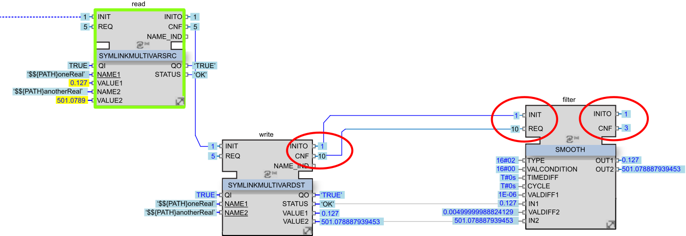
Another use of this function block is to filter by frequency of changes. For example, if a value changes every 2 ms but your system only needs a reaction every 10 ms you can divide by 5 the number of events generated.
For Boolean data in the application there is also a way to reduce the number of events by using the E_D_FF function block.
The symlinks function blocks in the EcoStruxure Automation Expert environment play a very specific role and propagate value changes to the rest of the logic.
Two main points to keep in mind:
The CNF of a SYMLINKMULTIVARDST function block is triggered for every change of any value.
The REQ of a SYMLINKMULTIVARSRC function block automatically triggers the value change for all symlinks even if the values are not modified.
| CAUTION | |
|---|---|
For more information on the relationship between the REQ and INIT events, refer to the Runtime.Base - Library Guide help topic SYMLINKMULTIVARSRC.
Example: using a function block to get the value of 10 symlinks and using some values (not all) for a calculation.
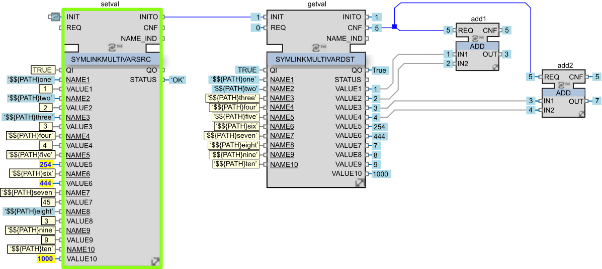
Because both function blocks operate with the same symlinks, any trigger of setval.REQ (SYMLINKMULTIVARSRC) is seen by getval (SYMLINKMULTIVARDST) as a change and triggers getval.CNF.
In this example, only the values 1 to 4 are used in the ADD logic.
With this application design, the calculation (ADD) is executed systematically, even if the change was done in a non-impacting value or even in the absence of any change.
Remember that hardware CATs usually trigger changes through SYMLINKMULTIVARDST for each input value. For example, in each bus cycle (let’s say 25 ms) an analog module with 16 channels will potentially trigger 16 events (if all are modified). If all these symlinks are grouped in a single SYMLINKMULTIVARDST then the CNF event will be generated 16 * 40 = 640 times per second (quickly generating a huge number of events).
To mitigate this:
Avoid grouping symlinks in one SYMLINKMULTIVARSRC unless they change at the same time (e.g. the REQ is triggered after updating all values).
Avoid grouping symlinks in one SYMLINKMULTIVARDST unless they are all used for the same calculation.
First refer to the description of the initialization process as described in the topic Strategies for Initialization in EcoStruxure Automation Expert.
One of the critical phases for the system is the startup, during which initialization is triggered. Most of the function blocks need initialization and will take their parameters values at this stage. This is true for most of the objects instantiated in the application, including:
Your application designed logic function blocks instances (CATs, Composites, Basics).
The hardware CATs instances that the application is using (for example Modbus slots).
All the symlinks.
Instances of function blocks coming from the used libraries.
As mentioned in the topic Strategies for Initialization in EcoStruxure Automation Expert, the recommended design pattern is to start the initialization of each resource using the DPAC_FULLINIT composite from the SE.DPAC library.
This function block automatically triggers the two main initialization chains:
'HW_INIT' chain: Dedicated to hardware CATs initialization.
'APP_INIT' chain: Dedicated to the application (process logic) initialization.
In order to sequence the initialization inside the application, there are two solutions:
Using a separate EVENTCHAINHEAD and EVENTCHAIN group with a custom string, as in the schema below. With INVERT set to FALSE, the priorities are sorted starting with the lowest one in each group. Every group is executed sequentially after the previous group finishes. There is no priority conflict because the priorities play a role only inside a group.
Using the 'APP_INIT' group but managing the priorities. As the library objects are using priorities <37, a good way to avoid overloading the initialization would be to set priority to a number >37.
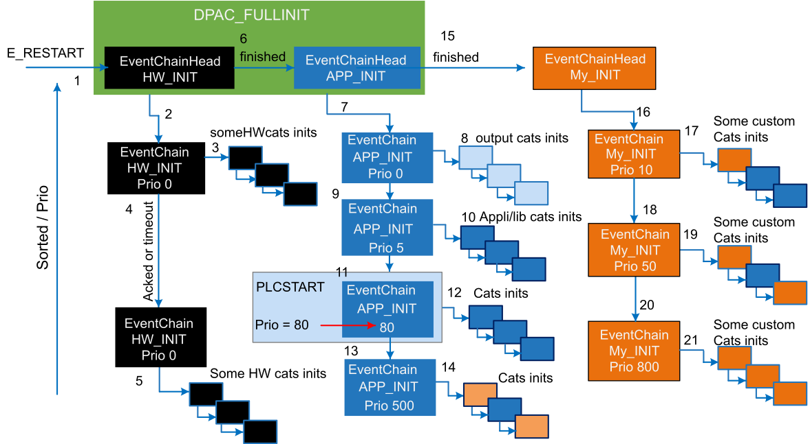
Most function blocks provide INIT and INITO events. When receiving the INIT the application must chain them together as a daisy chain.
When using a plcStart function block, link back the INITO of the last function block from the initialization chain with the plcStart. If not doing so, the plcStart function block will wait for the timeout (500 ms) which causes avoidable time lost.
When using a EVENTCHAIN function block, link back the last INITO of the last function block from the initialization chain with the EVENTCHAIN. If not doing so, the EVENTCHAIN function block will wait for the timeout which causes avoidable time lost.
As explained in the topic Events Management in a Resource, the events are managed inside a resource through two event queues: the external queue being processed only after the full internal queue content is processed. Therefore, the organization of the application code has a huge impact on performance.
The following tips apply to the use of structured text (ST) in Basic function blocks. They are intended to add clarity to the application and avoid unnecessary events or blocking algorithm. However, they may sometimes be contradictory and should be applied together in a balanced way.
Avoid blocking the system for too long with a large algorithm (ST) R5 [organize]
When processing an algorithm, the system executes its entire code before considering the next event. In the meantime, some external events occur which fills the event queue. The execution of these events are then delayed. Breaking long algorithms into smaller steps would allow the system to process queues more frequently.
Keep your function blocks small enough, use composition (ST) R6 [Organize]
By splitting the code into small chunks (CATs, composites, basics) and using composition, the designer allows for logic reusability but not only this. It also gives the system the ability to manage the execution more smoothly and makes debugging easier: identification of faulty logic is more precisely identified, and control of the events (blocking/raising/counting) more accurate.
Use basics for simple logic (ST) R7 [Organize]
The basic function blocks are used to describe atomic logical algorithms with a graph of execution. It is used for example for:
Small logic with simple code (below, a simple ADD function block which executes the algorithm REQ on event REQ and returns the result with CNF):
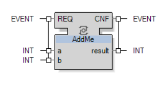
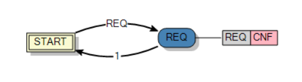
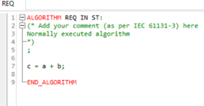
Larger logic with IF structures:
|
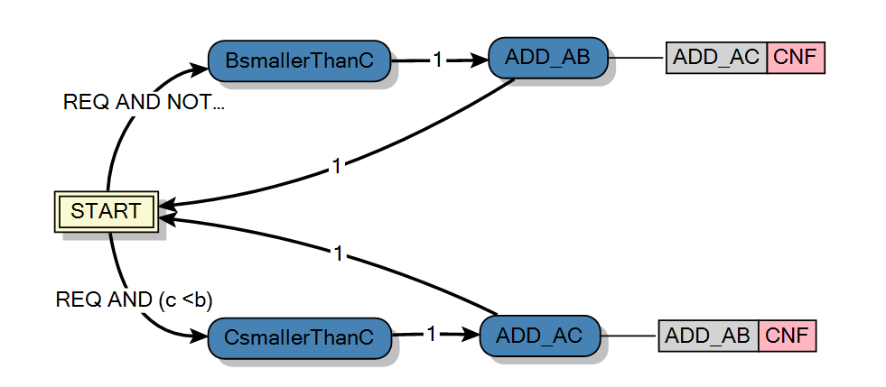 |
The boolean equation on branches are the IF conditions. Then, when the associated algorithm is executed, this avoids complex branching and jumps in ST code, keeping the algorithms as simple as possible. |
|
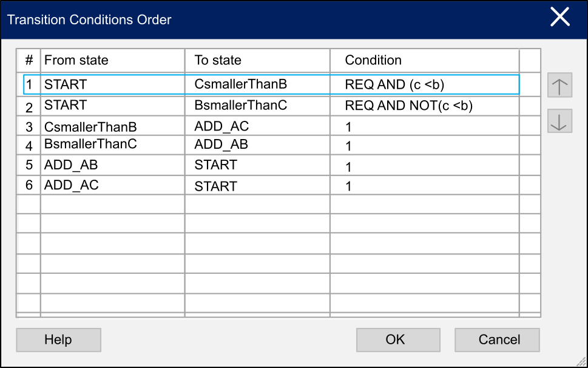 |
NOTE: If the IF conditions are not exclusive, then both branches will be executed (sequentially, in the order the links were created). The order of execution is influenced by assigning them a higher priority (lower number) in this list.
|
Use Basic (ST) and Component-Based design R8 [Organize]
Component-Based design refers the ability of the function blocks to be used repeatedly with minimal configuration effort and with an interactive approach of event and data exchange between the function blocks. This design method advantage is that the application remain comprehensive as the functions blocks are small and all the interactions between them are visible.
Developing with Basics functions and structured text refer to develop high-level complex algorithm inside one single function block. This design method advantage is that the solution triggers fewer events which increase the device performances. Thus the same operation done with a Basics function and a component-based design may be succeeded faster with the Basics function.
The following image shows an example for each of these two design methods:
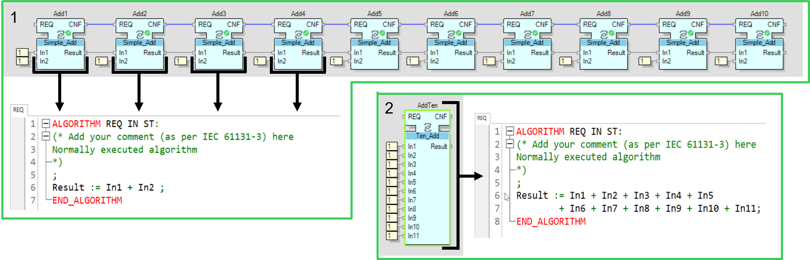
Component-Based design: Small reusable function blocks are linked one after the other. The logic is comprehensible which eases the diagnostic. However it generates 10 events.
Basics Functions with Structured Text design: Bigger function block with fewer chance to be reused. Its logic may not be directly comprehensible which can increase diagnostic complexity. However it generates only one event.
The designer should be careful when dispatching events to multiple connections.
Try to avoid parallelism (with the expectation this will speed-up the processing): In all cases, the connections will always be internally considered sequentially in their order of creation (when linked from function block to function block). So an apparent parallelism in the network chart is in fact a sequential execution of the links, and not a simultaneous one.
Use explicit synchronization:
|
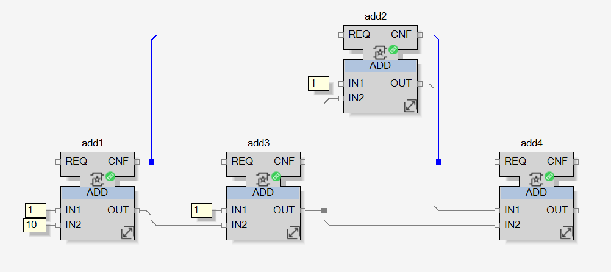 |
For instance, the output of this logic is hardly predictable because the use of parallelism makes it dependent on the order of creation of the parallel links. |
|
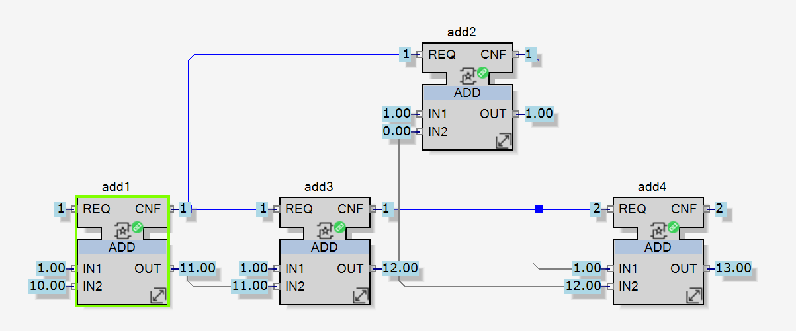 |
If add2 is executed before add3 then the result is not correct, result is equal to 13 instead of 25. Furthermore, the total count of events, starting from add1.REQ is : |
|
add1(REQ) + add2(REQ) + add3(REQ) + 2*add4(REQ + CNF) = 1+1+1+2*2 = 7 events |
|
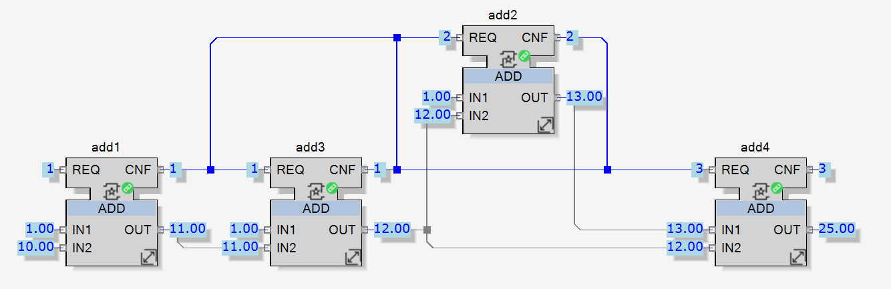 |
To fix the computation error, an event can be added to re-synchronize, and force add2 to recalculate when add add3 is complete. |
But as shown in the picture the new total event count is:
|
add1(REQ) + 2*add2(REQ) + add3(REQ) + 3*add4 (REQ + CNF) = 1+2*1+1+3*2 = 10 events |
Often these kind of algorithms can be linearized in a sequence: this brings better readability, avoids parallelism errors and generates fewer events:
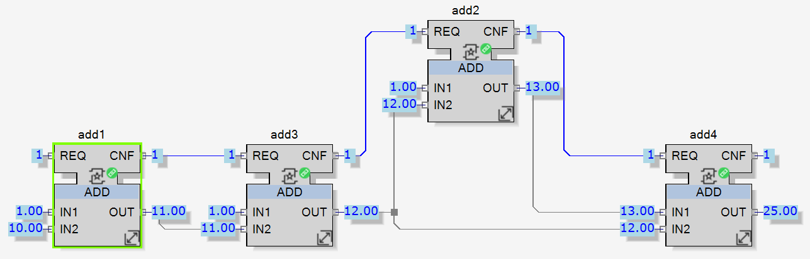
|
add1(REQ) + add2(REQ) + add3(REQ) + add4(REQ + CNF) = 1+1+1+2*1 = 5 events |
In an event driven system, a timely information or cadence is also managed as an event.
The designer can create periodic calls to function blocks using E_Cycle function block. This is a valid method, however, it needs to be carefully checked.
For example:
Avoid using lots of timers inside a resource, remember you are using an event driven paradigm.
Avoid the use of refresh rates that are unnecessarily short as this overloads the system.
Keep in mind that timer events are also managed sequentially inside the external queue. Therefore, they can be delayed if the system is not able to process all the events present between two successive timer events, in a shorter time than the expected timer rate.